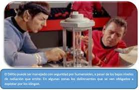

En la serie original, los cristales de dilitio se formaban únicamente de manera natural, convirtiendo su búsqueda en el argumento de varias historias. En Star Trek IV: Misión: salvar la Tierra, Spock descubrió un método para recristalizar el dilitio que permitió a la tripulación regenerar los cristales del ave de presa klingon capturado. El método consistía en usar reactores de fisión del siglo XX para reunir fotones de alta energía que regeneraban los cristales

Superman y los Cristales
Microsoft presentó ayer en su conferencia Ignite 2019 un sorprendente método de almacenamiento de datos. La compañía de Bill Gates ha trabajado de manera conjunta con Warner Bros. para almacenar y recuperar la totalidad de la película de Superman de 1978 en un fragmento de cristal de 75 por 75 por 2 milímetros de espesor. La placa cristalina es “aproximadamente del tamaño de un posavasos para bebidas”, según explica Microsoft en un comunicado oficial.
ARTICULOS
Cristales en el Tiempo
En 2012, el físico teórico Frank Wilczek propuso un polémico concepto para describir un nuevo estado de la materia que desafiaba las leyes de la física. "Cristales de tiempo", los llamó Wilczek, quien en 2004 ganó el Premio Nobel de física.
Al principio, varios de sus colegas dijeron que era simplemente imposible crear cristales de tiempo, pero luego, varias investigaciones, incluyendo un reciente estudio de la Universidad de Granada en España, han comenzado a mostrar que quizás sí es posible crear este extraño material.
Producir estos cristales nos permitiría medir el tiempo y la distancias con una "precisión exquisita", como escribió Wilczek en un artículo en la revista Scientific American.
Logran filmar, por primera un video, de los cristales del tiempo. Hasta hace solo unos años, se creía que los cristales de tiempo eran simples objetos teóricos que no podían existir en la realidad.
Un equipo de investigadores de Alemania y Polonia acaba de marcar un nuevo hito en Física al conseguir, por primera vez, capturar en vídeo a un cristal de tiempo. Con la ayuda de un potente microscopio electrónico de rayos X, en efecto, los científicos lograron filmar el extraño comportamiento de uno de estos objetos, que hasta 2016 se consideraban puramente teóricos. El extraordinario avance se acaba de publicar en 'Physical Review Letters'.